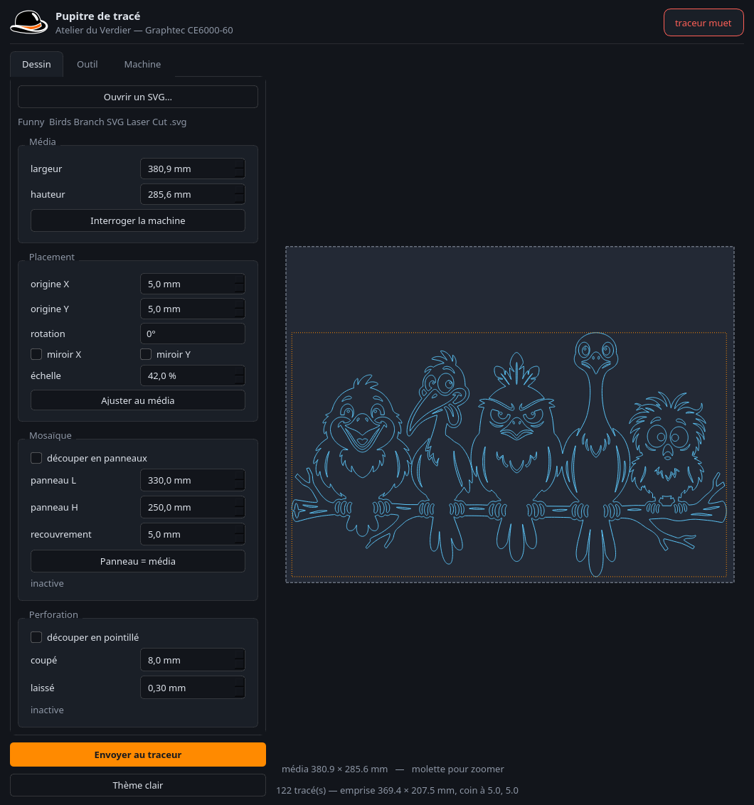
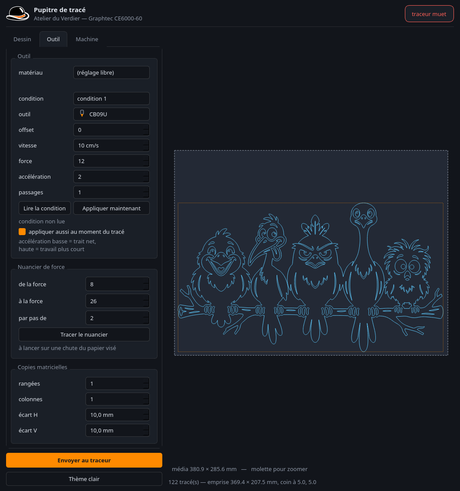
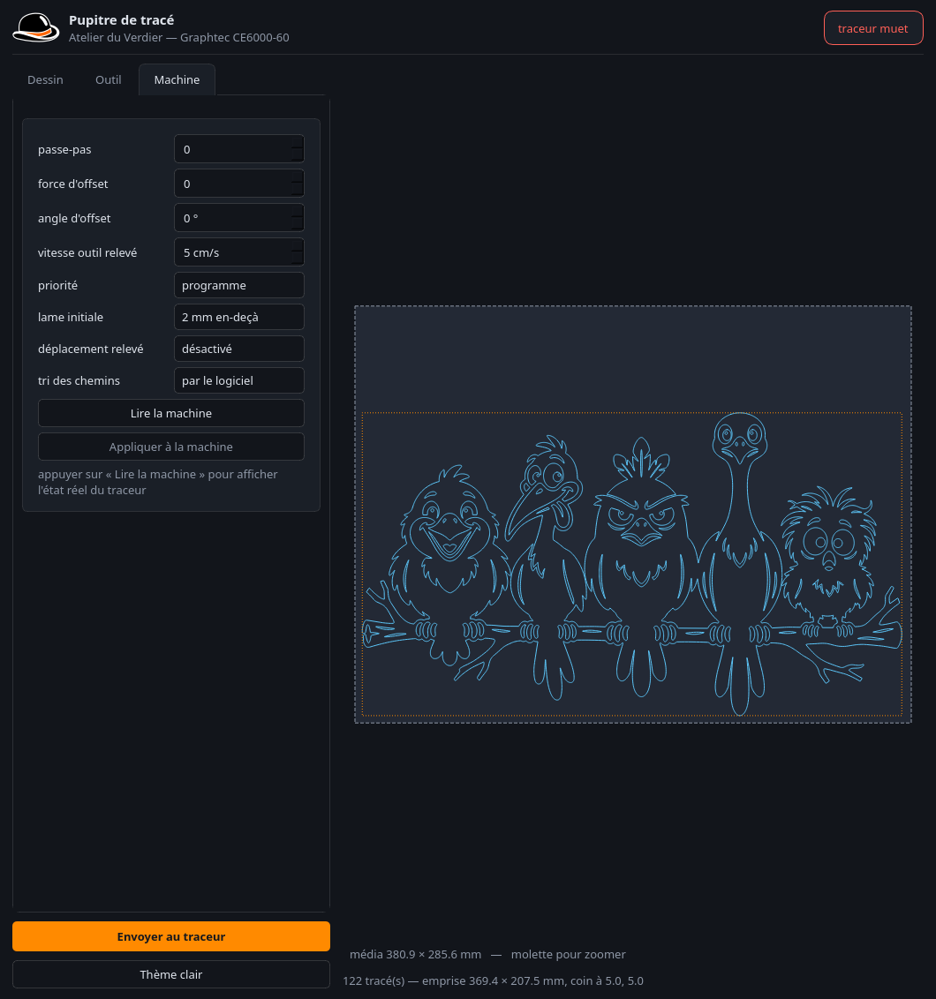

Cliquer n'importe où, ou Échap, pour fermer
Le Graphtec CE6000-60 n'est pas une imprimante à pilote propriétaire : c'est un traceur qui lit des commandes texte. Le driver Windows ne fait que traduire des courbes en HP-GL et pousser le résultat sur le port.
Une seule application à lancer, trois onglets, et quatre gestes. Le reste du dépôt est ce qu'il a fallu comprendre pour l'écrire — c'est plus bas, et replié.
Un SVG, n'importe lequel. Les avertissements de lecture s'affichent sous le nom.
Origine, rotation, miroirs, échelle — ou « ajuster au média » d'un bouton.
Le carnet d'établi pose tout d'un coup : lame, vitesse, force, passages.
Chaque réglage est relu ; si l'un n'a pas été retenu, l'envoi est annulé.

Quand le dessin dépasse la feuille, la mosaïque le coupe en tuiles avec recouvrement, numérotées et raccordées aux croix. Un bouton pose le panneau à la taille du média.
Le mode pointillé alterne coupé et laissé — 8,0 mm coupés, 0,30 mm laissés par défaut — pour un gabarit qui se détache à la main sans tomber tout seul.

La largeur de la pointe suit le diamètre de la lame, son angle suit celui de la lame. Le type déclaré doit correspondre à l'outil réellement monté : un « Stylo feutre » oublié a arrondi tous les angles d'une découpe.

Tout ce qui est écrit dans la machine est relu, et l'envoi est annulé si un réglage n'a pas été retenu. Tracer avec des réglages qu'on croit posés et qui ne le sont pas gâche le média — et on ne s'en aperçoit qu'à la fin.
La partie technique, repliée : à dérouler seulement si le sujet intéresse. Deux journées entières se cachent dans les deux premiers panneaux.
Avec COMMANDE réglée sur AUTO, le traceur devine le
langage d'après ce qu'il reçoit. Quand il ne reconnaît ni HP-GL ni GP-GL, il
écrit les octets reçus en toutes lettres — U572,2620; tracé
au stylo. Puis la ligne court vers la droite et le panneau affiche « hors
surface » : une conséquence, pas la cause, et qui envoie chercher du côté des
cotes alors que le dessin tenait très bien.
Qu'AUTO allait très bien « puisque la machine reconnaît les deux à
la volée ». Une commodité jamais vérifiée, contredite par un
avertissement que la machine répétait dans ses logs. La mesure qui a tranché :
le même fichier de 163 Ko, envoyé plume levée, ajoute une entrée au journal en
AUTO et aucune en HP-GL.
Fermer et rouvrir /dev/usb/lp0 entre deux étapes rend la machine
muette, pour des dizaines de secondes. C'est à quoi se réduit toute une
journée de chasse aux « pannes intermittentes ».
L'endpoint d'envoi fait 8 octets et refuse les données quand la machine
sature (EAGAIN en O_NONBLOCK). Écrire sans attendre
tronque les gros fichiers en silence. C'est le contrôle de flux du port
série sous une autre forme : l'USB ne l'a pas supprimé.
Les réponses se terminent par \r et s'accumulent. La toute
première interrogation après ouverture revient décalée : le code en
jette une pour rien, sans quoi trois relevés identiques n'en donnent que
sept paramètres sur onze, l'accélération lue à l'index d'un autre.
Les capteurs de média sont sur la table : une feuille qui ne les couvre pas n'est jamais détectée. Le levier descend, tout a l'air normal, et la machine réclame indéfiniment. Même symptôme si un galet presseur pince dans le vide plutôt que sur une bande d'entraînement.
Vitesse, force, accélération et type d'outil ne passent pas par HP-GL. Ils passent
par TC, une commande Graphtec sans documentation publique — relevée
en capturant ce que son propre logiciel envoie.
| Paramètre | Commande | Plage |
|---|---|---|
| vitesse | TC1002,3,<cond>,<cm/s × 10> | 1 à 640, soit 64 cm/s |
| force | TC1002,4,<cond>,<n> | 1 à 38 |
| accélération | TC1002,5,<cond>,<n> | 1 à 3 seulement |
| type d'outil + offset | TC1002,2,<cond>,<code>,<offset> | offset −5 à +5 |
Les codes d'outil ont été relevés en parcourant la liste du logiciel Graphtec deux fois de haut en bas — la même suite les deux fois. Une mesure reproduite, pas une déduction sur un seul passage.
| Outil | Code | Outil | Code |
|---|---|---|---|
| CB09U | 1 | CB15UB | 3 |
| CB09U-K60 | 10 | Autre | 6 |
| CB15U | 2 | Stylo feutre | 9 |
TC modifie durablement la condition enregistrée dans la
machine, exactement comme le fait le logiciel d'origine — d'où la case « régler
la machine à l'envoi », qu'on peut décocher.
Deux méthodes ont échoué avant : OA; rend la position
logique, pas celle du chariot — il ne mesure donc aucun mouvement ; et le
contrôle de flux ne mord pas, 15 ko partent en 3,8 s quelle que soit la vitesse.
La seule mesure qui a tranché est un chronomètre à la main.
Et surtout : la première version du verdict regardait l'étendue des durées, pas leur ordre. N'importe quel bruit la satisfaisait, et elle a annoncé un résultat faux avec aplomb. Un verdict doit exiger la croissance, et se taire quand les mesures ne sont ni constantes ni croissantes.
La force de coupe se trouve sur une chute du vrai matériau, en montant jusqu'à ce que le film se détache sans entamer le support. Aucun calcul ne donne ce nombre. D'où le nuancier : une grille de carrés à lever, pour trouver le réglage sur un papier neuf.
La compensation d'offset de lame. Le firmware s'en charge : on lui envoie la polyligne nominale, il place la lame. La refaire côté PC serait la faire deux fois.
TC2004,1 accepte une écriture — 0 devient 1, relu 1 — sans
qu'aucune ligne du vidage en clair ne bouge. Un réglage réel que la machine
n'expose nulle part. Sondé deux fois, sans résultat.HP-GL ERREUR 1 naît par intermittence d'une salve
TC. Sans effet sur le tracé, et évitable.Sous GPL-3.0, sur github.com/atelierduverdier/graphtec-ce6000 — y compris les huit sondes de l'enquête, et les trois suites de tests dont une qui vérifie que les deux autres savent échouer.